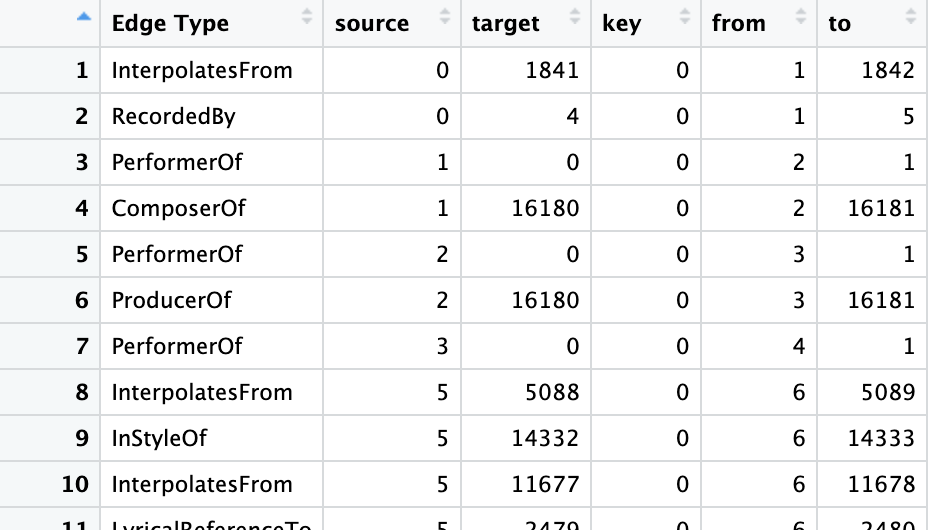

pacman::p_load(tidyverse, jsonlite,
tidygraph, ggraph,ggplot2,SmartEDA,igraph,visNetwork)Take Home Exercise 2
VAST Challenge 2024 Mini-Challenge 1
Overview
In this exercise, I will address Question 1 and Question 2 individually.
Design and develop visualizations and visual analytic tools that will allow Silas to explore and understand the profile of Sailor Shift’s career
Who has she been most influenced by over time?
Who has she collaborated with and directly or indirectly influenced?
How has she influenced collaborators of the broader Oceanus Folk community?
Develop visualizations that illustrate how the influence of Oceanus Folk has spread through the musical world.
Was this influence intermittent or did it have a gradual rise?
What genres and top artists have been most influenced by Oceanus Folk?
On the converse, how has Oceanus Folk changed with the rise of Sailor Shift? From which genres does it draw most of its contemporary inspiration?
Getting Started
For the purpose of this exercise, four R packages will be used. They are tidyverse, jsonlite, tidygraph and ggraph.
In the code chunk below, p_load() of pacman package is used to load the R packages into R environemnt.
Importing Kownledge Graph Data
For the purpose of this exercise, MC1_graph.json file will be used. Before getting started, you should have the data set in the data sub-folder.
In the code chunk below, fromJSON() of jsonlite package is used to import MC1_graph.json file into R and save the output object
kg <- fromJSON("data/MC1_graph.json")What are the components of kg data?
glimpse(kg)List of 5
$ directed : logi TRUE
$ multigraph: logi TRUE
$ graph :List of 2
..$ node_default: Named list()
..$ edge_default: Named list()
$ nodes :'data.frame': 17412 obs. of 10 variables:
..$ Node Type : chr [1:17412] "Song" "Person" "Person" "Person" ...
..$ name : chr [1:17412] "Breaking These Chains" "Carlos Duffy" "Min Qin" "Xiuying Xie" ...
..$ single : logi [1:17412] TRUE NA NA NA NA FALSE ...
..$ release_date : chr [1:17412] "2017" NA NA NA ...
..$ genre : chr [1:17412] "Oceanus Folk" NA NA NA ...
..$ notable : logi [1:17412] TRUE NA NA NA NA TRUE ...
..$ id : int [1:17412] 0 1 2 3 4 5 6 7 8 9 ...
..$ written_date : chr [1:17412] NA NA NA NA ...
..$ stage_name : chr [1:17412] NA NA NA NA ...
..$ notoriety_date: chr [1:17412] NA NA NA NA ...
$ links :'data.frame': 37857 obs. of 4 variables:
..$ Edge Type: chr [1:37857] "InterpolatesFrom" "RecordedBy" "PerformerOf" "ComposerOf" ...
..$ source : int [1:37857] 0 0 1 1 2 2 3 5 5 5 ...
..$ target : int [1:37857] 1841 4 0 16180 0 16180 0 5088 14332 11677 ...
..$ key : int [1:37857] 0 0 0 0 0 0 0 0 0 0 ...The result shows a typical knowledge graph (KG) data structure, the detail explanation is as followed:
1.The overall structure is a list of 5 elements:
| Element Name | Meaning |
|---|---|
| directed: TRUE | Indicates the graph is directed (i.e., relationships have direction, like “someone performed a song”) |
| multigraph: TRUE | Indicates this is a multigraph, meaning multiple edges (relationships) can exist between the same pair of nodes (e.g., a person can be both “composer” and “performer”) |
| graph | Contains default attributes for nodes and edges (currently empty named lists) |
| nodes | A data.frame, each row represents a node (e.g., a person or a song) |
| links | A data.frame, each row represents an edge (i.e., a relationship between two nodes) |
2.nodes table (node metadata)
There are 17,412 nodes, with the following variables:
| Column Name | Example / Meaning |
|---|---|
| Node Type | Node type, such as "Song" or "Person" |
| name | Name of the node (e.g., a person or song title) |
| single | Whether it is a single (TRUE / FALSE) |
| release_date | Release date (e.g., "2017") |
| genre | Genre (e.g., "Oceanus Folk") |
| notable | Whether it’s notable (TRUE / FALSE) |
| id | Unique ID for the node |
| written_date | Date the song was written |
| stage_name | Stage name (if any) |
| notoriety_date | Date the artist became known (if any) |
3.links table (edge/relationship information)
There are 37,857 edges, with the following columns:
| Column Name | Meaning / Example |
|---|---|
| Edge Type | Type of relationship (e.g., "PerformerOf", "ComposerOf", "InterpolateFrom") |
| source | ID of the source node |
| target | ID of the target node |
| key | Differentiates multiple edges between the same nodes |
Inspect structure
Before preparing the data, it is always a good practice to examine the structure of kg object.
In the code chunk below str() is used to reveal the structure of kg object.
str(kg, max.level = 1)List of 5
$ directed : logi TRUE
$ multigraph: logi TRUE
$ graph :List of 2
$ nodes :'data.frame': 17412 obs. of 10 variables:
$ links :'data.frame': 37857 obs. of 4 variables:Extracting the edges and nodes tables
Next, as_tibble() of tibble package package is used to extract the nodes and links tibble data frames from kg object into two separate tibble data frames called nodes_tbl and edges_tbl respectively.
nodes_tbl <- as_tibble(kg$nodes)
edges_tbl <- as_tibble(kg$links) Initial EDA
It is time for us to apply appropriate EDA methods to examine the data.
In this code chunk below, ggplot2 functions are used the reveal the frequency distribution of Edge Type field of edges_tbl.
nodes_tbl %>%
count(`Node Type`) %>%
ggplot(aes(x = n, y = reorder(`Node Type`, n))) +
geom_col(fill = "steelblue") +
labs(title = "Distribution of Node Types in Knowledge Graph",
x = "Count", y = "Node Type") +
theme_minimal()Most nodes are of type Person
Explanation: Individuals (singers, composers, producers, etc.) form the majority of nodes.
Insight: The knowledge graph is person-centric, emphasizing individual contributions in the music ecosystem.
Song is the second most frequent node type
Explanation: Songs are heavily represented, as expected in a music-related knowledge graph.
Insight: This reflects the graph’s role in mapping who is connected to which songs, enabling analysis of performance, authorship, and influence.
Other node types (e.g., RecordLabel, Album, MusicalGroup) are far fewer
Explanation: Entities like music labels, albums, and groups are present but much less prominent.
Insight: These nodes play a supporting role in contextualizing the people-song relationships, potentially useful for advanced analyses (e.g., influence of labels, collaborations within groups).
MusicalGroup nodes are very rare
- Insight: Either the graph focuses more on individual artists rather than bands/groups, or group membership data may be under-represented.
edges_tbl %>%
count(`Edge Type`) %>%
ggplot(aes(x = n, y = reorder(`Edge Type`, n))) +
geom_bar(stat = "identity", fill = "steelblue") +
labs(title = "Edge Type Distribution in Knowledge Graph",
x = "Count", y = "Edge Type") +
theme_minimal()
“PerformerOf” is the most frequent edge type
Explanation: The majority of edges connect a person to a song via a performance relationship.
Insight: This indicates that the relationship between performers and songs is a core structure in the knowledge graph, showing that the graph places a strong emphasis on who performed what.
“RecordedBy”, “ComposerOf”, and “ProducerOf” are also common
Explanation: Besides performers, the graph also documents many creators of the music, including composers, producers, and recording personnel.
Insight: This suggests the graph goes beyond surface-level links, capturing multiple roles across the music creation pipeline.
Edge types like “DirectlySamples”, “CoverOf”, “MemberOf”, and “LyricalReferenceTo” are less frequent
Explanation: These edges represent more complex or less common musical relationships, such as:
DirectlySamples: relates to copyright and musical inspiration
CoverOf: shows the propagation of classic works through cover versions
MemberOf: describes group or band membership
Insight: Although less common, these edge types may hold higher value in studying musical influence and cultural transmission.
On the other hands, code chunk below uses ggplot2 functions to reveal the frequency distribution of Node Type field of nodes_tbl.
Creating Knowledge Graph
Mapping from node id to row index
Before we can go ahead to build the tidygraph object, it is important for us to ensures each id from the node list is mapped to the correct row number. This requirement can be achive by using the code chunk below.
id_map <- tibble(id = nodes_tbl$id, #Retrieve the ID column of each row node
index = seq_len(
nrow(nodes_tbl))) #Generate a line number sequence from 1 to nMap source and target IDs to row indices
Next, we will map the source and the target IDs to row indices by using the code chunk below.
edges_tbl <- edges_tbl %>%
left_join(id_map, by = c("source" = "id")) %>% # source id → from index
rename(from = index) %>%
left_join(id_map, by = c("target" = "id")) %>% # target id → to index
rename(to = index)
Note
To better understand the changes before and after the process, it is to take a screenshot of edges_tbl before and after this process and examine the differences.


Now we can see the difference between before and after the edges_tbl.
table(edges_tbl$`Edge Type`)
ComposerOf CoverOf DirectlySamples DistributedBy
3290 1429 619 3013
InStyleOf InterpolatesFrom LyricalReferenceTo LyricistOf
2289 1574 1496 2985
MemberOf PerformerOf ProducerOf RecordedBy
568 13587 3209 3798 library(dplyr)
of_edges <- edges_tbl %>%
filter(`Edge Type` %in% c("PerformerOf", "ComposerOf", "LyricistOf", "ProducerOf"))
of_edges_with_target_info <- of_edges %>%
left_join(nodes_tbl, by = c("target" = "id")) %>%
select(`Edge Type`, target_name = name, target_type = `Node Type`)
summary_table <- of_edges_with_target_info %>%
group_by(`Edge Type`, target_type) %>%
summarise(count = n(), .groups = "drop") %>%
arrange(`Edge Type`, desc(count))
print(summary_table)of_edges_full <- of_edges %>%
left_join(nodes_tbl, by = c("source" = "id")) %>%
rename(from_name = name, from_type = `Node Type`) %>%
left_join(nodes_tbl, by = c("target" = "id")) %>%
rename(to_name = name, to_type = `Node Type`) %>%
select(`Edge Type`, from_name, from_type, to_name, to_type)
print(of_edges_full)of_edges_full %>%
count(`Edge Type`, from_type)Filter out any unmatched (invalid) edges
Lastly, the code chunk below will be used to exclude the unmatch edges.
edges_tbl <- edges_tbl %>%
filter(!is.na(from), !is.na(to))Creating tidygraph
Lastly, tbl_graph() is used to create tidygraph’s graph object by using the code chunk below.
graph <- tbl_graph(nodes = nodes_tbl,
edges = edges_tbl,
directed = kg$directed)graph# A tbl_graph: 17412 nodes and 37857 edges
#
# A directed multigraph with 16 components
#
# Node Data: 17,412 × 10 (active)
`Node Type` name single release_date genre notable id written_date
<chr> <chr> <lgl> <chr> <chr> <lgl> <int> <chr>
1 Song Breaking Th… TRUE 2017 Ocea… TRUE 0 <NA>
2 Person Carlos Duffy NA <NA> <NA> NA 1 <NA>
3 Person Min Qin NA <NA> <NA> NA 2 <NA>
4 Person Xiuying Xie NA <NA> <NA> NA 3 <NA>
5 RecordLabel Nautical Mi… NA <NA> <NA> NA 4 <NA>
6 Song Unshackled … FALSE 2026 Lo-F… TRUE 5 <NA>
7 Person Luke Payne NA <NA> <NA> NA 6 <NA>
8 Person Xiulan Zeng NA <NA> <NA> NA 7 <NA>
9 Person David Frank… NA <NA> <NA> NA 8 <NA>
10 RecordLabel Colline-Cas… NA <NA> <NA> NA 9 <NA>
# ℹ 17,402 more rows
# ℹ 2 more variables: stage_name <chr>, notoriety_date <chr>
#
# Edge Data: 37,857 × 6
from to `Edge Type` source target key
<int> <int> <chr> <int> <int> <int>
1 1 1842 InterpolatesFrom 0 1841 0
2 1 5 RecordedBy 0 4 0
3 2 1 PerformerOf 1 0 0
# ℹ 37,854 more rowsYou might want to confirm the output object is indeed in tidygraph format by using the code chunk below.
class(graph)[1] "tbl_graph" "igraph" Visualising the knowledge graph
In this section, we will use ggraph’s functions to visualise and analyse the graph object.
Warning
The two examples below are not model answers, they are examples to show you how to use the mantra of Overview first, details on demand of visual investigation.
Several of the ggraph layouts involve randomisation. In order to ensure reproducibility, it is necessary to set the seed value before plotting by using the code chunk below.
set.seed(1234)Visualising the whole graph
In the code chunk below, ggraph functions are used to visualise the whole graph.
ggraph(graph, layout = "fr") +
geom_edge_link(alpha = 0.3,
colour = "gray") +
geom_node_point(aes(color = `Node Type`),
size = 4) +
geom_node_text(aes(label = name),
repel = TRUE,
size = 2.5) +
theme_void()
Notice that the whole graph is very messy and we can hardy discover any useful patterns. This is always the case in graph visualisation and analysis. In order to gain meaningful visual discovery, it is always useful for us to looking into the details, for example by plotting sub-graphs.
Visualising the sub-graph
In this section, we are interested to create a sub-graph base on MemberOf value in Edge Type column of the edges data frame.
Filtering edges to only “MemberOf”
graph_memberof <- graph %>%
activate(edges) %>% ##
filter(`Edge Type` == "MemberOf")Extracting only connected nodes (i.e., used in these edges)
used_node_indices <- graph_memberof %>%
activate(edges) %>%
as_tibble() %>%
select(from, to) %>%
unlist() %>%
unique()Keeping only those nodes
graph_memberof <- graph_memberof %>%
activate(nodes) %>%
mutate(row_id = row_number()) %>%
filter(row_id %in% used_node_indices) %>%
select(-row_id) # optional cleanupPlotting the sub-graph
ggraph(graph_memberof,
layout = "fr") +
geom_edge_link(alpha = 0.5,
colour = "gray") +
geom_node_point(aes(color = `Node Type`),
size = 1) +
geom_node_text(aes(label = name),
repel = TRUE,
size = 2.5) +
theme_void()Notice that the sub-graph above is very clear and the relationship between musical group and person can be visualise easily.
Proceed to answer the questions for Mini-Challenge 1
Firstly, I created an extract_subnetwork function to simplify the process of extracting network data. The methodology was referenced from a senior’s work. In this case, I also added a direction parameter to allow for further filtering.
library(igraph)
library(tidygraph)
library(dplyr)
extract_subnetwork <- function(graph, node_name,
distance = NULL,
direction = c("all", "in", "out"),
edge_types = NULL,
node_types = NULL) {
direction <- match.arg(direction)
node <- which(V(graph)$name == node_name)
if (length(node) == 0) stop("Node name not found in graph.")
distance <- ifelse(is.null(distance), length(graph), distance)
mode <- switch(direction,
all = "all",
`in` = "in",
out = "out")
igraph_subgraph <- induced_subgraph(graph, vids = ego(graph, node, order = distance, mode = mode)[[1]])
nodes_df <- igraph::as_data_frame(igraph_subgraph, what = "vertices")
edges_df <- igraph::as_data_frame(igraph_subgraph, what = "edges")
if (!is.null(edge_types)) {
edges_df <- edges_df %>% dplyr::filter(`Edge Type` %in% edge_types)
}
if (!is.null(node_types)) {
nodes_df <- nodes_df %>% dplyr::filter(`Node Type` %in% node_types)
}
used_node_ids <- unique(c(edges_df$from, edges_df$to))
nodes_df <- nodes_df %>% dplyr::filter(name %in% used_node_ids)
tidygraph::tbl_graph(nodes = nodes_df, edges = edges_df, directed = igraph::is_directed(graph))
}There are three sub-questions in Mini-Challenge 1. I have chosen Question 1, and the following is the process I used to solve it:
- Who has she been most influenced by over time?
Sailor Shift–>Person –> work
- Who has she collaborated with and directly or indirectly influenced?
1.1 Who has she collaborated with
Sailor Shift–>Person –> work (direct)
Sailor Shift–>work–>Person(indirect)
1.2Who has she directly or indirectly influenced?
Sailor Shift–>Person –> work (direct)
Sailor Shift–>work–>Person(indirect)
3.How has she influenced collaborators of the broader Oceanus Folk community?
Sailor Shift–>Person/community–>Work(direct)
Who has she collaborated with and directly or indirectly influenced? &
How has she influenced collaborators of the broader Oceanus Folk community
First we will first answer ：Who has she influenced ?
And here is the directly neighbours :
nodes_tbl <- nodes_tbl %>% mutate(index = row_number())
sailor_index <- nodes_tbl %>%
filter(name == "Sailor Shift") %>%
pull(index)
influence_edges <- c("InStyleOf", "CoverOf", "InterpolatesFrom", "LyricalReferenceTo", "DirectlySamples")
edges_from_sailor <- edges_tbl %>%
filter(to == sailor_index & `Edge Type` %in% influence_edges)
influenced1 <- edges_from_sailor %>%
left_join(nodes_tbl, by = c("from" = "index")) %>%
select(name, `Edge Type`, everything())influenced1# A tibble: 7 × 16
name `Edge Type` source target key from to `Node Type` single
<chr> <chr> <int> <int> <int> <int> <int> <chr> <lgl>
1 Cassette Future InStyleOf 17022 17255 0 17023 17256 MusicalGro… NA
2 Silver Veil LyricalRef… 17032 17255 0 17033 17256 MusicalGro… NA
3 The Phantom Op… Interpolat… 17063 17255 0 17064 17256 MusicalGro… NA
4 The Hollow Mon… InStyleOf 17110 17255 0 17111 17256 MusicalGro… NA
5 Cassian Storm LyricalRef… 17126 17255 0 17127 17256 Person NA
6 Claire Holmes Interpolat… 17155 17255 0 17156 17256 Person NA
7 Copper Canyon … DirectlySa… 17361 17255 0 17362 17256 MusicalGro… NA
# ℹ 7 more variables: release_date <chr>, genre <chr>, notable <lgl>, id <int>,
# written_date <chr>, stage_name <chr>, notoriety_date <chr>subgraph_in <- extract_subnetwork(
graph,
node_name = "Sailor Shift",
distance = 3,
direction = "in"
)
edges_vn <- igraph::as_data_frame(subgraph_in, what = "edges") %>%
filter(`Edge Type` != "ProducerOf") %>%
rename(from = from, to = to, label = `Edge Type`)
nodes_vn <- igraph::as_data_frame(subgraph_in, what = "vertices") %>%
mutate(id = name, label = name, group = `Node Type`)
used_nodes <- unique(c(edges_vn$from, edges_vn$to))
nodes_vn <- nodes_vn %>% filter(id %in% used_nodes)
visNetwork(nodes_vn, edges_vn, height = "800px", width = "100%") %>%
visEdges(arrows = "to") %>%
visOptions(
highlightNearest = list(enabled = TRUE, degree = 3, hover = TRUE),
nodesIdSelection = TRUE,
selectedBy = "group"
) %>%
visLegend() %>%
visLayout(randomSeed = 1234) %>%
visInteraction(navigationButtons = TRUE)nodes_vn Node Type name single release_date
Zara Quinn Person Zara Quinn NA <NA>
Milo Knight Person Milo Knight NA <NA>
Cassette Future MusicalGroup Cassette Future NA <NA>
Eliza Brooks Person Eliza Brooks NA <NA>
Jasper Reed Person Jasper Reed NA <NA>
Silver Veil MusicalGroup Silver Veil NA <NA>
Juno Ray Person Juno Ray NA <NA>
Savannah Teal Person Savannah Teal NA <NA>
The Phantom Operators MusicalGroup The Phantom Operators NA <NA>
Chloe Montgomery Person Chloe Montgomery NA <NA>
Nathaniel Brooks Person Nathaniel Brooks NA <NA>
Clara Davis Person Clara Davis NA <NA>
The Hollow Monarchs MusicalGroup The Hollow Monarchs NA <NA>
Cassian Storm Person Cassian Storm NA <NA>
Claire Holmes Person Claire Holmes NA <NA>
Sailor Shift Person Sailor Shift NA <NA>
Beatrice Albright Person Beatrice Albright NA <NA>
Daniel O'Connell Person Daniel O'Connell NA <NA>
Copper Canyon Ghosts MusicalGroup Copper Canyon Ghosts NA <NA>
genre notable id written_date
Zara Quinn <NA> NA Zara Quinn <NA>
Milo Knight <NA> NA Milo Knight <NA>
Cassette Future <NA> NA Cassette Future <NA>
Eliza Brooks <NA> NA Eliza Brooks <NA>
Jasper Reed <NA> NA Jasper Reed <NA>
Silver Veil <NA> NA Silver Veil <NA>
Juno Ray <NA> NA Juno Ray <NA>
Savannah Teal <NA> NA Savannah Teal <NA>
The Phantom Operators <NA> NA The Phantom Operators <NA>
Chloe Montgomery <NA> NA Chloe Montgomery <NA>
Nathaniel Brooks <NA> NA Nathaniel Brooks <NA>
Clara Davis <NA> NA Clara Davis <NA>
The Hollow Monarchs <NA> NA The Hollow Monarchs <NA>
Cassian Storm <NA> NA Cassian Storm <NA>
Claire Holmes <NA> NA Claire Holmes <NA>
Sailor Shift <NA> NA Sailor Shift <NA>
Beatrice Albright <NA> NA Beatrice Albright <NA>
Daniel O'Connell <NA> NA Daniel O'Connell <NA>
Copper Canyon Ghosts <NA> NA Copper Canyon Ghosts <NA>
stage_name notoriety_date label
Zara Quinn <NA> <NA> Zara Quinn
Milo Knight <NA> <NA> Milo Knight
Cassette Future <NA> <NA> Cassette Future
Eliza Brooks Midnight Atlas <NA> Eliza Brooks
Jasper Reed <NA> <NA> Jasper Reed
Silver Veil <NA> <NA> Silver Veil
Juno Ray <NA> <NA> Juno Ray
Savannah Teal <NA> <NA> Savannah Teal
The Phantom Operators <NA> <NA> The Phantom Operators
Chloe Montgomery Lane Taylor <NA> Chloe Montgomery
Nathaniel Brooks David Cole <NA> Nathaniel Brooks
Clara Davis Rosemary Banks <NA> Clara Davis
The Hollow Monarchs <NA> <NA> The Hollow Monarchs
Cassian Storm Seraphina Vale <NA> Cassian Storm
Claire Holmes Jaye Finch <NA> Claire Holmes
Sailor Shift <NA> <NA> Sailor Shift
Beatrice Albright Bea Azure <NA> Beatrice Albright
Daniel O'Connell Kael Storm <NA> Daniel O'Connell
Copper Canyon Ghosts <NA> <NA> Copper Canyon Ghosts
group
Zara Quinn Person
Milo Knight Person
Cassette Future MusicalGroup
Eliza Brooks Person
Jasper Reed Person
Silver Veil MusicalGroup
Juno Ray Person
Savannah Teal Person
The Phantom Operators MusicalGroup
Chloe Montgomery Person
Nathaniel Brooks Person
Clara Davis Person
The Hollow Monarchs MusicalGroup
Cassian Storm Person
Claire Holmes Person
Sailor Shift Person
Beatrice Albright Person
Daniel O'Connell Person
Copper Canyon Ghosts MusicalGroupSecond we will first answer ：How has she influenced collaborators of the broader Oceanus Folk community?
nodes_tbl <- nodes_tbl %>% mutate(index = row_number())
creator_names <- c(
"Zara Quinn", "Milo Knight", "Cassette Future", "Eliza Brooks",
"Jasper Reed", "Silver Veil", "Juno Ray", "Savannah Teal",
"The Phantom Operators", "Chloe Montgomery", "Nathaniel Brooks", "Clara Davis",
"The Hollow Monarchs", "Cassian Storm", "Claire Holmes", "Beatrice Albright",
"Daniel O'Connell", "Copper Canyon Ghosts"
)
creator_ids <- nodes_tbl %>%
filter(name %in% creator_names) %>%
pull(index)
target_edge_types <- c("PerformerOf", "ComposerOf", "LyricistOf", "ProducerOf")
edges_out <- edges_tbl %>%
filter(from %in% creator_ids, `Edge Type` %in% target_edge_types)
edges_out_full <- edges_out %>%
left_join(nodes_tbl %>% mutate(index = row_number()), by = c("to" = "index")) %>%
select(from, to, `Edge Type`, name, `Node Type`, release_date,genre,notable,notoriety_date)
edges_out_full <- edges_out_full %>%
left_join(nodes_tbl %>% select(index, creator_name = name), by = c("from" = "index")) %>%
select(creator_name, `Edge Type`, name, `Node Type`, release_date,genre,notable,notoriety_date)edges_oceanus <- edges_out_full %>%
filter(genre == "Oceanus Folk")
edges_oceanus# A tibble: 29 × 8
creator_name `Edge Type` name `Node Type` release_date genre notable
<chr> <chr> <chr> <chr> <chr> <chr> <lgl>
1 Beatrice Albright PerformerOf Tideswo… Album 2031 Ocea… TRUE
2 Beatrice Albright LyricistOf Tideswo… Album 2031 Ocea… TRUE
3 Beatrice Albright PerformerOf Tideswo… Album 2031 Ocea… TRUE
4 Beatrice Albright PerformerOf The Sir… Song 2031 Ocea… TRUE
5 Beatrice Albright PerformerOf Whisper… Song 2031 Ocea… TRUE
6 Beatrice Albright PerformerOf Moonlit… Song 2031 Ocea… TRUE
7 Beatrice Albright PerformerOf Seven F… Song 2031 Ocea… TRUE
8 Beatrice Albright LyricistOf Tide-Wo… Album 2034 Ocea… TRUE
9 Beatrice Albright PerformerOf Tide-Wo… Album 2034 Ocea… TRUE
10 Beatrice Albright LyricistOf The Sun… Album 2035 Ocea… TRUE
# ℹ 19 more rows
# ℹ 1 more variable: notoriety_date <chr>library(dplyr)
library(visNetwork)
edges_sailor <- edges_all %>%
filter(to == "Sailor Shift") %>%
filter(`Edge Type` %in% c("InStyleOf", "LyricalReferenceTo", "CoverOf", "InterpolatesFrom", "DirectlySamples")) %>%
select(from, to, `Edge Type`)
creator_work_nodes <- unique(c(edges_oceanus$creator_name, edges_oceanus$name))
all_node_names <- union(
creator_work_nodes,
unique(c(edges_sailor$from, edges_sailor$to, "Sailor Shift", "Copper Canyon Ghosts"))
)
nodes_vn <- nodes_tbl %>%
filter(name %in% all_node_names) %>%
mutate(
id = index,
label = name,
group = `Node Type`,
color.background = ifelse(name == "Sailor Shift", "gold", NA), # 高亮 Sailor
shape = ifelse(name == "Sailor Shift", "star", "dot")
)
edges_vn_creator <- edges_oceanus %>%
rename(from = creator_name, to = name, label = `Edge Type`) %>%
left_join(nodes_vn %>% select(name, id), by = c("from" = "name")) %>%
rename(from_id = id) %>%
left_join(nodes_vn %>% select(name, id), by = c("to" = "name")) %>%
rename(to_id = id) %>%
mutate(length = NA) %>%
select(from = from_id, to = to_id, label, length) %>%
filter(!is.na(from) & !is.na(to))
edges_vn_sailor <- edges_sailor %>%
left_join(nodes_vn %>% select(name, id), by = c("from" = "name")) %>%
rename(from_id = id) %>%
left_join(nodes_vn %>% select(name, id), by = c("to" = "name")) %>%
rename(to_id = id) %>%
mutate(length = NA) %>%
select(from = from_id, to = to_id, label = `Edge Type`, length) %>%
filter(!is.na(from) & !is.na(to))
forced_edge <- tibble(
from = "Copper Canyon Ghosts",
to = "Sailor Shift",
label = "DirectlySamples",
length = 400
)
forced_edge_ids <- forced_edge %>%
left_join(nodes_vn %>% select(name, id), by = c("from" = "name")) %>%
rename(from_id = id) %>%
left_join(nodes_vn %>% select(name, id), by = c("to" = "name")) %>%
rename(to_id = id) %>%
select(from = from_id, to = to_id, label, length) %>%
filter(!is.na(from) & !is.na(to))
edges_final <- bind_rows(
edges_vn_creator,
edges_vn_sailor,
forced_edge_ids
)
visNetwork(nodes_vn, edges_final, height = "700px", width = "100%") %>%
visEdges(arrows = "to") %>%
visOptions(
highlightNearest = TRUE,
nodesIdSelection = TRUE,
selectedBy = "group"
) %>%
visLegend() %>%
visLayout(randomSeed = 42) %>%
visPhysics(
solver = "forceAtlas2Based",
forceAtlas2Based = list(gravitationalConstant = -80),
stabilization = list(enabled = TRUE, iterations = 100)
)Indirectly- We want to explore through the songs and the albums,and then find who she has influenced,but the result seems to 0.
influence_edges <- c("InStyleOf", "CoverOf", "InterpolatesFrom", "LyricalReferenceTo", "DirectlySamples")
edges_to_sailor <- edges_all %>%
filter(
to == "Sailor Shift",
`Edge Type` %in% influence_edges
)
edges_to_sailor_full <- edges_to_sailor %>%
left_join(nodes_all %>% select(name, `Node Type`), by = c("from" = "name")) %>%
rename(
`From Name` = from,
`From Type` = `Node Type`
) %>%
mutate(
`To Name` = "Sailor Shift",
`To Type` = "Person"
) %>%
select(`From Name`, `From Type`, `To Name`, `To Type`, `Edge Type`)edges_to_sailor_fullWho has she been most influenced by over time?
In order to answer this question,we need to divide the question into three sub questions:
1.Directly or Indirectly been influenced?
2.If the starting node is Sailor ,what and who is the next node? Her works , Groups, Other work?
3.How to answer the question of influenced by over time?
From the not very perfect visnetwork plot, we firstly see what she have produce and then explore.
subgraph_in <- extract_subnetwork(
graph,
node_name = "Sailor Shift",
distance = 5,
direction = "out"
)
subgraph_igraph <- as.igraph(subgraph_in)
nodes_all <- igraph::as_data_frame(subgraph_igraph, what = "vertices")
edges_all <- igraph::as_data_frame(subgraph_igraph, what = "edges")
sailor_id <- nodes_all$name[nodes_all$name == "Sailor Shift"]
edges_1st <- edges_all %>% filter(from == "Sailor Shift")
valid_targets <- edges_1st %>%
left_join(nodes_all, by = c("to" = "name")) %>%
filter(`Node Type` %in% c("MusicalGroup", "Song", "Album","RecordLabel")) %>%
pull(to)
valid_node_ids <- unique(c("Sailor Shift", valid_targets))
edges_vn <- edges_all %>%
filter(from %in% valid_node_ids | to %in% valid_node_ids)
used_nodes <- unique(c(edges_vn$from, edges_vn$to))
nodes_vn <- nodes_all %>%
filter(name %in% used_nodes) %>%
mutate(id = name, label = name, group = `Node Type`)
edges_vn <- edges_vn %>%
mutate(
label = `Edge Type`,
title = paste0("Edge Type: ", `Edge Type`)
)
visNetwork(nodes_vn, edges_vn, height = "800px", width = "100%") %>%
visEdges(
arrows = "to",
font = list(
size = 12,
align = "middle",
color = "black"
)
) %>%
visOptions(
highlightNearest = list(enabled = TRUE, degree = 4, hover = TRUE),
nodesIdSelection = TRUE,
selectedBy = "group"
) %>%
visLegend() %>%
visLayout(randomSeed = 1234) %>%
visInteraction(navigationButtons = TRUE)edges_1st <- edges_all %>%
filter(from == "Sailor Shift")
edges_1st_full <- edges_1st %>%
left_join(nodes_all, by = c("to" = "name")) %>%
select(from, to, `Edge Type`, `Node Type`)
edges_1st_full from to Edge Type
1 Sailor Shift Neon Heartbeat LyricistOf
2 Sailor Shift Ballads for the End of Time LyricistOf
3 Sailor Shift Melancholy Circuitry LyricistOf
4 Sailor Shift Drifting Between the Stars and the Sea LyricistOf
5 Sailor Shift Artificial Sunsets LyricistOf
6 Sailor Shift Electric Reverie LyricistOf
7 Sailor Shift Ballads for the Low Tide LyricistOf
8 Sailor Shift The Fiddle & The Fjord InStyleOf
9 Sailor Shift Tides of Echos LyricistOf
10 Sailor Shift Hidden Depths LyricistOf
11 Sailor Shift Ivy Echos DirectlySamples
12 Sailor Shift Ivy Echos MemberOf
13 Sailor Shift The Kelp Forest Canticles LyricistOf
14 Sailor Shift Luminescent Tides LyricistOf
15 Sailor Shift Shoreline Sonnets LyricistOf
16 Sailor Shift Tidal Pop Waves LyricistOf
17 Sailor Shift Tidal Pop Waves PerformerOf
18 Sailor Shift Salty Dreams LyricistOf
19 Sailor Shift Salty Dreams PerformerOf
20 Sailor Shift The Current & The Chord LyricistOf
21 Sailor Shift The Current & The Chord PerformerOf
22 Sailor Shift Coral Beats LyricistOf
23 Sailor Shift Coral Beats PerformerOf
24 Sailor Shift Tides & Ballads LyricistOf
25 Sailor Shift Tides & Ballads PerformerOf
26 Sailor Shift Oceanbound LyricistOf
27 Sailor Shift Oceanbound PerformerOf
28 Sailor Shift Echoes of the Deep LyricistOf
29 Sailor Shift Echoes of the Deep PerformerOf
30 Sailor Shift High Tide Heartbeat PerformerOf
31 Sailor Shift Electric Eel Love PerformerOf
32 Sailor Shift Sun-Drenched Daydream PerformerOf
33 Sailor Shift Chord of the Deep PerformerOf
34 Sailor Shift Heart of the Habitat PerformerOf
35 Sailor Shift Reef Rhythm PerformerOf
36 Sailor Shift Driftwood Lullaby PerformerOf
37 Sailor Shift Saltwater Hymn PerformerOf
38 Sailor Shift Moon Over the Tide PerformerOf
39 Sailor Shift Into the Current PerformerOf
40 Sailor Shift Barnacle Heart PerformerOf
41 Sailor Shift Fog & Fiddle PerformerOf
42 Sailor Shift The Fisherman's Prayer PerformerOf
43 Sailor Shift Stormsong PerformerOf
44 Sailor Shift Salt in My Veins PerformerOf
45 Sailor Shift The Last Mariner PerformerOf
46 Sailor Shift The Saltwater Weavers InStyleOf
47 Sailor Shift Drowned Harbor LyricalReferenceTo
48 Sailor Shift Tidesworn Ballads PerformerOf
49 Sailor Shift Tidesworn Ballads LyricistOf
50 Sailor Shift Submerged Sonatas PerformerOf
51 Sailor Shift Submerged Sonatas LyricistOf
52 Sailor Shift Seashell Serenade PerformerOf
Node Type
1 Album
2 Album
3 Album
4 Album
5 Album
6 Album
7 Album
8 MusicalGroup
9 Album
10 Album
11 MusicalGroup
12 MusicalGroup
13 Album
14 Album
15 Album
16 Album
17 Album
18 Album
19 Album
20 Album
21 Album
22 Album
23 Album
24 Album
25 Album
26 Album
27 Album
28 Album
29 Album
30 Song
31 Song
32 Song
33 Song
34 Song
35 Song
36 Song
37 Song
38 Song
39 Song
40 Song
41 Song
42 Song
43 Song
44 Song
45 Song
46 MusicalGroup
47 MusicalGroup
48 Album
49 Album
50 Album
51 Album
52 SongAll edges starting from Sailor Shift (i.e. first layer edges)
edges_1st <- edges_all %>%
filter(from == "Sailor Shift")
colnames(nodes_all) [1] "Node Type" "name" "single" "release_date"
[5] "genre" "notable" "id" "written_date"
[9] "stage_name" "notoriety_date"edges_1st_full <- edges_1st %>%
left_join(nodes_all, by = c("to" = "name"))
edges_1st_full from to Edge Type
1 Sailor Shift Neon Heartbeat LyricistOf
2 Sailor Shift Ballads for the End of Time LyricistOf
3 Sailor Shift Melancholy Circuitry LyricistOf
4 Sailor Shift Drifting Between the Stars and the Sea LyricistOf
5 Sailor Shift Artificial Sunsets LyricistOf
6 Sailor Shift Electric Reverie LyricistOf
7 Sailor Shift Ballads for the Low Tide LyricistOf
8 Sailor Shift The Fiddle & The Fjord InStyleOf
9 Sailor Shift Tides of Echos LyricistOf
10 Sailor Shift Hidden Depths LyricistOf
11 Sailor Shift Ivy Echos DirectlySamples
12 Sailor Shift Ivy Echos MemberOf
13 Sailor Shift The Kelp Forest Canticles LyricistOf
14 Sailor Shift Luminescent Tides LyricistOf
15 Sailor Shift Shoreline Sonnets LyricistOf
16 Sailor Shift Tidal Pop Waves LyricistOf
17 Sailor Shift Tidal Pop Waves PerformerOf
18 Sailor Shift Salty Dreams LyricistOf
19 Sailor Shift Salty Dreams PerformerOf
20 Sailor Shift The Current & The Chord LyricistOf
21 Sailor Shift The Current & The Chord PerformerOf
22 Sailor Shift Coral Beats LyricistOf
23 Sailor Shift Coral Beats PerformerOf
24 Sailor Shift Tides & Ballads LyricistOf
25 Sailor Shift Tides & Ballads PerformerOf
26 Sailor Shift Oceanbound LyricistOf
27 Sailor Shift Oceanbound PerformerOf
28 Sailor Shift Echoes of the Deep LyricistOf
29 Sailor Shift Echoes of the Deep PerformerOf
30 Sailor Shift High Tide Heartbeat PerformerOf
31 Sailor Shift Electric Eel Love PerformerOf
32 Sailor Shift Sun-Drenched Daydream PerformerOf
33 Sailor Shift Chord of the Deep PerformerOf
34 Sailor Shift Heart of the Habitat PerformerOf
35 Sailor Shift Reef Rhythm PerformerOf
36 Sailor Shift Driftwood Lullaby PerformerOf
37 Sailor Shift Saltwater Hymn PerformerOf
38 Sailor Shift Moon Over the Tide PerformerOf
39 Sailor Shift Into the Current PerformerOf
40 Sailor Shift Barnacle Heart PerformerOf
41 Sailor Shift Fog & Fiddle PerformerOf
42 Sailor Shift The Fisherman's Prayer PerformerOf
43 Sailor Shift Stormsong PerformerOf
44 Sailor Shift Salt in My Veins PerformerOf
45 Sailor Shift The Last Mariner PerformerOf
46 Sailor Shift The Saltwater Weavers InStyleOf
47 Sailor Shift Drowned Harbor LyricalReferenceTo
48 Sailor Shift Tidesworn Ballads PerformerOf
49 Sailor Shift Tidesworn Ballads LyricistOf
50 Sailor Shift Submerged Sonatas PerformerOf
51 Sailor Shift Submerged Sonatas LyricistOf
52 Sailor Shift Seashell Serenade PerformerOf
source target key Node Type single release_date genre notable
1 17255 16961 0 Album NA 2031 Synthwave FALSE
2 17255 16989 0 Album NA 2033 Oceanus Folk TRUE
3 17255 16999 0 Album NA 2033 Americana TRUE
4 17255 17047 0 Album NA 2034 Oceanus Folk TRUE
5 17255 17048 0 Album NA 2035 Oceanus Folk TRUE
6 17255 17049 0 Album NA 2038 Oceanus Folk TRUE
7 17255 17121 0 Album NA 2037 Oceanus Folk TRUE
8 17255 17192 0 MusicalGroup NA <NA> <NA> NA
9 17255 17231 0 Album NA 2029 Oceanus Folk TRUE
10 17255 17252 0 Album NA 2031 Oceanus Folk TRUE
11 17255 17260 1 MusicalGroup NA <NA> <NA> NA
12 17255 17260 0 MusicalGroup NA <NA> <NA> NA
13 17255 17261 0 Album NA 2024 Oceanus Folk TRUE
14 17255 17262 0 Album NA 2025 Oceanus Folk TRUE
15 17255 17263 0 Album NA 2026 Oceanus Folk TRUE
16 17255 17272 1 Album NA 2028 Oceanus Folk TRUE
17 17255 17272 0 Album NA 2028 Oceanus Folk TRUE
18 17255 17273 1 Album NA 2030 Oceanus Folk TRUE
19 17255 17273 0 Album NA 2030 Oceanus Folk TRUE
20 17255 17274 1 Album NA 2032 Oceanus Folk TRUE
21 17255 17274 0 Album NA 2032 Oceanus Folk TRUE
22 17255 17275 1 Album NA 2034 Oceanus Folk TRUE
23 17255 17275 0 Album NA 2034 Oceanus Folk TRUE
24 17255 17276 1 Album NA 2036 Oceanus Folk TRUE
25 17255 17276 0 Album NA 2036 Oceanus Folk TRUE
26 17255 17277 1 Album NA 2038 Oceanus Folk TRUE
27 17255 17277 0 Album NA 2038 Oceanus Folk TRUE
28 17255 17278 1 Album NA 2040 Oceanus Folk TRUE
29 17255 17278 0 Album NA 2040 Oceanus Folk TRUE
30 17255 17279 0 Song TRUE 2028 Oceanus Folk FALSE
31 17255 17280 0 Song FALSE 2028 Oceanus Folk TRUE
32 17255 17281 0 Song FALSE 2028 Oceanus Folk FALSE
33 17255 17282 0 Song FALSE 2028 Oceanus Folk FALSE
34 17255 17283 0 Song TRUE 2030 Oceanus Folk FALSE
35 17255 17284 0 Song FALSE 2030 Oceanus Folk FALSE
36 17255 17285 0 Song FALSE 2030 Oceanus Folk FALSE
37 17255 17286 0 Song FALSE 2032 Oceanus Folk FALSE
38 17255 17287 0 Song FALSE 2034 Oceanus Folk TRUE
39 17255 17288 0 Song TRUE 2034 Oceanus Folk FALSE
40 17255 17289 0 Song FALSE 2034 Oceanus Folk FALSE
41 17255 17290 0 Song FALSE 2036 Oceanus Folk TRUE
42 17255 17291 0 Song TRUE 2036 Oceanus Folk FALSE
43 17255 17292 0 Song TRUE 2038 Oceanus Folk TRUE
44 17255 17293 0 Song FALSE 2040 Oceanus Folk FALSE
45 17255 17294 0 Song FALSE 2040 Oceanus Folk FALSE
46 17255 17299 0 MusicalGroup NA <NA> <NA> NA
47 17255 17327 0 MusicalGroup NA <NA> <NA> NA
48 17255 17350 1 Album NA 2031 Oceanus Folk TRUE
49 17255 17350 0 Album NA 2031 Oceanus Folk TRUE
50 17255 17356 1 Album NA 2031 Oceanus Folk TRUE
51 17255 17356 0 Album NA 2031 Oceanus Folk TRUE
52 17255 17410 0 Song TRUE 2030 Oceanus Folk TRUE
id written_date stage_name notoriety_date
1 16961 2030 <NA> <NA>
2 16989 2032 <NA> <NA>
3 16999 2032 <NA> <NA>
4 17047 2033 <NA> <NA>
5 17048 2034 <NA> <NA>
6 17049 2037 <NA> <NA>
7 17121 2036 <NA> <NA>
8 17192 <NA> <NA> <NA>
9 17231 2028 <NA> <NA>
10 17252 2030 <NA> <NA>
11 17260 <NA> <NA> <NA>
12 17260 <NA> <NA> <NA>
13 17261 2023 <NA> <NA>
14 17262 2024 <NA> <NA>
15 17263 2025 <NA> <NA>
16 17272 2027 <NA> <NA>
17 17272 2027 <NA> <NA>
18 17273 2029 <NA> <NA>
19 17273 2029 <NA> <NA>
20 17274 2031 <NA> <NA>
21 17274 2031 <NA> <NA>
22 17275 2033 <NA> <NA>
23 17275 2033 <NA> <NA>
24 17276 2035 <NA> <NA>
25 17276 2035 <NA> <NA>
26 17277 2037 <NA> <NA>
27 17277 2037 <NA> <NA>
28 17278 2039 <NA> <NA>
29 17278 2039 <NA> <NA>
30 17279 <NA> <NA> <NA>
31 17280 <NA> <NA> <NA>
32 17281 <NA> <NA> <NA>
33 17282 <NA> <NA> <NA>
34 17283 <NA> <NA> <NA>
35 17284 <NA> <NA> <NA>
36 17285 <NA> <NA> <NA>
37 17286 <NA> <NA> <NA>
38 17287 <NA> <NA> <NA>
39 17288 <NA> <NA> <NA>
40 17289 <NA> <NA> <NA>
41 17290 <NA> <NA> <NA>
42 17291 <NA> <NA> <NA>
43 17292 <NA> <NA> <NA>
44 17293 <NA> <NA> <NA>
45 17294 <NA> <NA> <NA>
46 17299 <NA> <NA> <NA>
47 17327 <NA> <NA> <NA>
48 17350 2030 <NA> <NA>
49 17350 2030 <NA> <NA>
50 17356 2030 <NA> <NA>
51 17356 2030 <NA> <NA>
52 17410 <NA> <NA> 2030Add type information of the from node
edges_1st_full_named <- edges_1st %>%
left_join(nodes_all %>% select(name, `Node Type`) %>%
rename(from = name, `From Type` = `Node Type`), by = "from") %>%
left_join(nodes_all %>% select(name, `Node Type`, release_date, genre, notable, notoriety_date) %>%
rename(to = name, `To Type` = `Node Type`, `To Release` = release_date,
`To Genre` = genre, `To Notable` = notable, `To Notoriety Date` = notoriety_date),
by = "to") %>%
select(from, `From Type`, to, `To Type`, `Edge Type`, `To Release`, `To Genre`, `To Notable`, `To Notoriety Date`)
edges_1st_full_named from From Type to To Type
1 Sailor Shift Person Neon Heartbeat Album
2 Sailor Shift Person Ballads for the End of Time Album
3 Sailor Shift Person Melancholy Circuitry Album
4 Sailor Shift Person Drifting Between the Stars and the Sea Album
5 Sailor Shift Person Artificial Sunsets Album
6 Sailor Shift Person Electric Reverie Album
7 Sailor Shift Person Ballads for the Low Tide Album
8 Sailor Shift Person The Fiddle & The Fjord MusicalGroup
9 Sailor Shift Person Tides of Echos Album
10 Sailor Shift Person Hidden Depths Album
11 Sailor Shift Person Ivy Echos MusicalGroup
12 Sailor Shift Person Ivy Echos MusicalGroup
13 Sailor Shift Person The Kelp Forest Canticles Album
14 Sailor Shift Person Luminescent Tides Album
15 Sailor Shift Person Shoreline Sonnets Album
16 Sailor Shift Person Tidal Pop Waves Album
17 Sailor Shift Person Tidal Pop Waves Album
18 Sailor Shift Person Salty Dreams Album
19 Sailor Shift Person Salty Dreams Album
20 Sailor Shift Person The Current & The Chord Album
21 Sailor Shift Person The Current & The Chord Album
22 Sailor Shift Person Coral Beats Album
23 Sailor Shift Person Coral Beats Album
24 Sailor Shift Person Tides & Ballads Album
25 Sailor Shift Person Tides & Ballads Album
26 Sailor Shift Person Oceanbound Album
27 Sailor Shift Person Oceanbound Album
28 Sailor Shift Person Echoes of the Deep Album
29 Sailor Shift Person Echoes of the Deep Album
30 Sailor Shift Person High Tide Heartbeat Song
31 Sailor Shift Person Electric Eel Love Song
32 Sailor Shift Person Sun-Drenched Daydream Song
33 Sailor Shift Person Chord of the Deep Song
34 Sailor Shift Person Heart of the Habitat Song
35 Sailor Shift Person Reef Rhythm Song
36 Sailor Shift Person Driftwood Lullaby Song
37 Sailor Shift Person Saltwater Hymn Song
38 Sailor Shift Person Moon Over the Tide Song
39 Sailor Shift Person Into the Current Song
40 Sailor Shift Person Barnacle Heart Song
41 Sailor Shift Person Fog & Fiddle Song
42 Sailor Shift Person The Fisherman's Prayer Song
43 Sailor Shift Person Stormsong Song
44 Sailor Shift Person Salt in My Veins Song
45 Sailor Shift Person The Last Mariner Song
46 Sailor Shift Person The Saltwater Weavers MusicalGroup
47 Sailor Shift Person Drowned Harbor MusicalGroup
48 Sailor Shift Person Tidesworn Ballads Album
49 Sailor Shift Person Tidesworn Ballads Album
50 Sailor Shift Person Submerged Sonatas Album
51 Sailor Shift Person Submerged Sonatas Album
52 Sailor Shift Person Seashell Serenade Song
Edge Type To Release To Genre To Notable To Notoriety Date
1 LyricistOf 2031 Synthwave FALSE <NA>
2 LyricistOf 2033 Oceanus Folk TRUE <NA>
3 LyricistOf 2033 Americana TRUE <NA>
4 LyricistOf 2034 Oceanus Folk TRUE <NA>
5 LyricistOf 2035 Oceanus Folk TRUE <NA>
6 LyricistOf 2038 Oceanus Folk TRUE <NA>
7 LyricistOf 2037 Oceanus Folk TRUE <NA>
8 InStyleOf <NA> <NA> NA <NA>
9 LyricistOf 2029 Oceanus Folk TRUE <NA>
10 LyricistOf 2031 Oceanus Folk TRUE <NA>
11 DirectlySamples <NA> <NA> NA <NA>
12 MemberOf <NA> <NA> NA <NA>
13 LyricistOf 2024 Oceanus Folk TRUE <NA>
14 LyricistOf 2025 Oceanus Folk TRUE <NA>
15 LyricistOf 2026 Oceanus Folk TRUE <NA>
16 LyricistOf 2028 Oceanus Folk TRUE <NA>
17 PerformerOf 2028 Oceanus Folk TRUE <NA>
18 LyricistOf 2030 Oceanus Folk TRUE <NA>
19 PerformerOf 2030 Oceanus Folk TRUE <NA>
20 LyricistOf 2032 Oceanus Folk TRUE <NA>
21 PerformerOf 2032 Oceanus Folk TRUE <NA>
22 LyricistOf 2034 Oceanus Folk TRUE <NA>
23 PerformerOf 2034 Oceanus Folk TRUE <NA>
24 LyricistOf 2036 Oceanus Folk TRUE <NA>
25 PerformerOf 2036 Oceanus Folk TRUE <NA>
26 LyricistOf 2038 Oceanus Folk TRUE <NA>
27 PerformerOf 2038 Oceanus Folk TRUE <NA>
28 LyricistOf 2040 Oceanus Folk TRUE <NA>
29 PerformerOf 2040 Oceanus Folk TRUE <NA>
30 PerformerOf 2028 Oceanus Folk FALSE <NA>
31 PerformerOf 2028 Oceanus Folk TRUE <NA>
32 PerformerOf 2028 Oceanus Folk FALSE <NA>
33 PerformerOf 2028 Oceanus Folk FALSE <NA>
34 PerformerOf 2030 Oceanus Folk FALSE <NA>
35 PerformerOf 2030 Oceanus Folk FALSE <NA>
36 PerformerOf 2030 Oceanus Folk FALSE <NA>
37 PerformerOf 2032 Oceanus Folk FALSE <NA>
38 PerformerOf 2034 Oceanus Folk TRUE <NA>
39 PerformerOf 2034 Oceanus Folk FALSE <NA>
40 PerformerOf 2034 Oceanus Folk FALSE <NA>
41 PerformerOf 2036 Oceanus Folk TRUE <NA>
42 PerformerOf 2036 Oceanus Folk FALSE <NA>
43 PerformerOf 2038 Oceanus Folk TRUE <NA>
44 PerformerOf 2040 Oceanus Folk FALSE <NA>
45 PerformerOf 2040 Oceanus Folk FALSE <NA>
46 InStyleOf <NA> <NA> NA <NA>
47 LyricalReferenceTo <NA> <NA> NA <NA>
48 PerformerOf 2031 Oceanus Folk TRUE <NA>
49 LyricistOf 2031 Oceanus Folk TRUE <NA>
50 PerformerOf 2031 Oceanus Folk TRUE <NA>
51 LyricistOf 2031 Oceanus Folk TRUE <NA>
52 PerformerOf 2030 Oceanus Folk TRUE 2030Below is all the information on the second layer, and remove if there is no other layer
selected_types <- c("DirectlySamples")
edges_selected <- edges_1st_full %>%
filter(`Edge Type` %in% selected_types)
edges_selected from to Edge Type source target key Node Type single
1 Sailor Shift Ivy Echos DirectlySamples 17255 17260 1 MusicalGroup NA
release_date genre notable id written_date stage_name notoriety_date
1 <NA> <NA> NA 17260 <NA> <NA> <NA>selected_types <- c("InStyleOf")
edges_selected <- edges_1st_full %>%
filter(`Edge Type` %in% selected_types)
edges_selected from to Edge Type source target key Node Type
1 Sailor Shift The Fiddle & The Fjord InStyleOf 17255 17192 0 MusicalGroup
2 Sailor Shift The Saltwater Weavers InStyleOf 17255 17299 0 MusicalGroup
single release_date genre notable id written_date stage_name
1 NA <NA> <NA> NA 17192 <NA> <NA>
2 NA <NA> <NA> NA 17299 <NA> <NA>
notoriety_date
1 <NA>
2 <NA>selected_types <- c("LyricalReferenceTo")
edges_selected <- edges_1st_full %>%
filter(`Edge Type` %in% selected_types)
edges_selected from to Edge Type source target key Node Type
1 Sailor Shift Drowned Harbor LyricalReferenceTo 17255 17327 0 MusicalGroup
single release_date genre notable id written_date stage_name
1 NA <NA> <NA> NA 17327 <NA> <NA>
notoriety_date
1 <NA>selected_types <- c("LyricistOf")
edges_selected <- edges_1st_full %>%
filter(`Edge Type` %in% selected_types)
edges_selected from to Edge Type source target
1 Sailor Shift Neon Heartbeat LyricistOf 17255 16961
2 Sailor Shift Ballads for the End of Time LyricistOf 17255 16989
3 Sailor Shift Melancholy Circuitry LyricistOf 17255 16999
4 Sailor Shift Drifting Between the Stars and the Sea LyricistOf 17255 17047
5 Sailor Shift Artificial Sunsets LyricistOf 17255 17048
6 Sailor Shift Electric Reverie LyricistOf 17255 17049
7 Sailor Shift Ballads for the Low Tide LyricistOf 17255 17121
8 Sailor Shift Tides of Echos LyricistOf 17255 17231
9 Sailor Shift Hidden Depths LyricistOf 17255 17252
10 Sailor Shift The Kelp Forest Canticles LyricistOf 17255 17261
11 Sailor Shift Luminescent Tides LyricistOf 17255 17262
12 Sailor Shift Shoreline Sonnets LyricistOf 17255 17263
13 Sailor Shift Tidal Pop Waves LyricistOf 17255 17272
14 Sailor Shift Salty Dreams LyricistOf 17255 17273
15 Sailor Shift The Current & The Chord LyricistOf 17255 17274
16 Sailor Shift Coral Beats LyricistOf 17255 17275
17 Sailor Shift Tides & Ballads LyricistOf 17255 17276
18 Sailor Shift Oceanbound LyricistOf 17255 17277
19 Sailor Shift Echoes of the Deep LyricistOf 17255 17278
20 Sailor Shift Tidesworn Ballads LyricistOf 17255 17350
21 Sailor Shift Submerged Sonatas LyricistOf 17255 17356
key Node Type single release_date genre notable id written_date
1 0 Album NA 2031 Synthwave FALSE 16961 2030
2 0 Album NA 2033 Oceanus Folk TRUE 16989 2032
3 0 Album NA 2033 Americana TRUE 16999 2032
4 0 Album NA 2034 Oceanus Folk TRUE 17047 2033
5 0 Album NA 2035 Oceanus Folk TRUE 17048 2034
6 0 Album NA 2038 Oceanus Folk TRUE 17049 2037
7 0 Album NA 2037 Oceanus Folk TRUE 17121 2036
8 0 Album NA 2029 Oceanus Folk TRUE 17231 2028
9 0 Album NA 2031 Oceanus Folk TRUE 17252 2030
10 0 Album NA 2024 Oceanus Folk TRUE 17261 2023
11 0 Album NA 2025 Oceanus Folk TRUE 17262 2024
12 0 Album NA 2026 Oceanus Folk TRUE 17263 2025
13 1 Album NA 2028 Oceanus Folk TRUE 17272 2027
14 1 Album NA 2030 Oceanus Folk TRUE 17273 2029
15 1 Album NA 2032 Oceanus Folk TRUE 17274 2031
16 1 Album NA 2034 Oceanus Folk TRUE 17275 2033
17 1 Album NA 2036 Oceanus Folk TRUE 17276 2035
18 1 Album NA 2038 Oceanus Folk TRUE 17277 2037
19 1 Album NA 2040 Oceanus Folk TRUE 17278 2039
20 0 Album NA 2031 Oceanus Folk TRUE 17350 2030
21 0 Album NA 2031 Oceanus Folk TRUE 17356 2030
stage_name notoriety_date
1 <NA> <NA>
2 <NA> <NA>
3 <NA> <NA>
4 <NA> <NA>
5 <NA> <NA>
6 <NA> <NA>
7 <NA> <NA>
8 <NA> <NA>
9 <NA> <NA>
10 <NA> <NA>
11 <NA> <NA>
12 <NA> <NA>
13 <NA> <NA>
14 <NA> <NA>
15 <NA> <NA>
16 <NA> <NA>
17 <NA> <NA>
18 <NA> <NA>
19 <NA> <NA>
20 <NA> <NA>
21 <NA> <NA>selected_types <- c("MemberOf")
edges_selected <- edges_1st_full %>%
filter(`Edge Type` %in% selected_types)
edges_selected from to Edge Type source target key Node Type single
1 Sailor Shift Ivy Echos MemberOf 17255 17260 0 MusicalGroup NA
release_date genre notable id written_date stage_name notoriety_date
1 <NA> <NA> NA 17260 <NA> <NA> <NA>selected_types <- c("PerformerOf")
edges_selected <- edges_1st_full %>%
filter(`Edge Type` %in% selected_types)
edges_selected from to Edge Type source target key Node Type
1 Sailor Shift Tidal Pop Waves PerformerOf 17255 17272 0 Album
2 Sailor Shift Salty Dreams PerformerOf 17255 17273 0 Album
3 Sailor Shift The Current & The Chord PerformerOf 17255 17274 0 Album
4 Sailor Shift Coral Beats PerformerOf 17255 17275 0 Album
5 Sailor Shift Tides & Ballads PerformerOf 17255 17276 0 Album
6 Sailor Shift Oceanbound PerformerOf 17255 17277 0 Album
7 Sailor Shift Echoes of the Deep PerformerOf 17255 17278 0 Album
8 Sailor Shift High Tide Heartbeat PerformerOf 17255 17279 0 Song
9 Sailor Shift Electric Eel Love PerformerOf 17255 17280 0 Song
10 Sailor Shift Sun-Drenched Daydream PerformerOf 17255 17281 0 Song
11 Sailor Shift Chord of the Deep PerformerOf 17255 17282 0 Song
12 Sailor Shift Heart of the Habitat PerformerOf 17255 17283 0 Song
13 Sailor Shift Reef Rhythm PerformerOf 17255 17284 0 Song
14 Sailor Shift Driftwood Lullaby PerformerOf 17255 17285 0 Song
15 Sailor Shift Saltwater Hymn PerformerOf 17255 17286 0 Song
16 Sailor Shift Moon Over the Tide PerformerOf 17255 17287 0 Song
17 Sailor Shift Into the Current PerformerOf 17255 17288 0 Song
18 Sailor Shift Barnacle Heart PerformerOf 17255 17289 0 Song
19 Sailor Shift Fog & Fiddle PerformerOf 17255 17290 0 Song
20 Sailor Shift The Fisherman's Prayer PerformerOf 17255 17291 0 Song
21 Sailor Shift Stormsong PerformerOf 17255 17292 0 Song
22 Sailor Shift Salt in My Veins PerformerOf 17255 17293 0 Song
23 Sailor Shift The Last Mariner PerformerOf 17255 17294 0 Song
24 Sailor Shift Tidesworn Ballads PerformerOf 17255 17350 1 Album
25 Sailor Shift Submerged Sonatas PerformerOf 17255 17356 1 Album
26 Sailor Shift Seashell Serenade PerformerOf 17255 17410 0 Song
single release_date genre notable id written_date stage_name
1 NA 2028 Oceanus Folk TRUE 17272 2027 <NA>
2 NA 2030 Oceanus Folk TRUE 17273 2029 <NA>
3 NA 2032 Oceanus Folk TRUE 17274 2031 <NA>
4 NA 2034 Oceanus Folk TRUE 17275 2033 <NA>
5 NA 2036 Oceanus Folk TRUE 17276 2035 <NA>
6 NA 2038 Oceanus Folk TRUE 17277 2037 <NA>
7 NA 2040 Oceanus Folk TRUE 17278 2039 <NA>
8 TRUE 2028 Oceanus Folk FALSE 17279 <NA> <NA>
9 FALSE 2028 Oceanus Folk TRUE 17280 <NA> <NA>
10 FALSE 2028 Oceanus Folk FALSE 17281 <NA> <NA>
11 FALSE 2028 Oceanus Folk FALSE 17282 <NA> <NA>
12 TRUE 2030 Oceanus Folk FALSE 17283 <NA> <NA>
13 FALSE 2030 Oceanus Folk FALSE 17284 <NA> <NA>
14 FALSE 2030 Oceanus Folk FALSE 17285 <NA> <NA>
15 FALSE 2032 Oceanus Folk FALSE 17286 <NA> <NA>
16 FALSE 2034 Oceanus Folk TRUE 17287 <NA> <NA>
17 TRUE 2034 Oceanus Folk FALSE 17288 <NA> <NA>
18 FALSE 2034 Oceanus Folk FALSE 17289 <NA> <NA>
19 FALSE 2036 Oceanus Folk TRUE 17290 <NA> <NA>
20 TRUE 2036 Oceanus Folk FALSE 17291 <NA> <NA>
21 TRUE 2038 Oceanus Folk TRUE 17292 <NA> <NA>
22 FALSE 2040 Oceanus Folk FALSE 17293 <NA> <NA>
23 FALSE 2040 Oceanus Folk FALSE 17294 <NA> <NA>
24 NA 2031 Oceanus Folk TRUE 17350 2030 <NA>
25 NA 2031 Oceanus Folk TRUE 17356 2030 <NA>
26 TRUE 2030 Oceanus Folk TRUE 17410 <NA> <NA>
notoriety_date
1 <NA>
2 <NA>
3 <NA>
4 <NA>
5 <NA>
6 <NA>
7 <NA>
8 <NA>
9 <NA>
10 <NA>
11 <NA>
12 <NA>
13 <NA>
14 <NA>
15 <NA>
16 <NA>
17 <NA>
18 <NA>
19 <NA>
20 <NA>
21 <NA>
22 <NA>
23 <NA>
24 <NA>
25 <NA>
26 2030Then we can visual all the connect from Sailor:
edges_1st_filtered <- edges_1st_full %>%
filter(`Edge Type` %in% c("LyricistOf", "PerformerOf", "MemberOf"))nodes_subgraph <- nodes_all %>%
filter(name %in% c("Sailor Shift", edges_1st_filtered$to)) %>%
transmute(id = name, label = name, group = `Node Type`)
edges_subgraph <- edges_1st_filtered %>%
transmute(
from = from,
to = to,
label = `Edge Type`,
title = paste0("Edge Type: ", `Edge Type`, "<br>To Type: ", `Node Type`, "<br>Year: ", release_date)
)
visNetwork(nodes_subgraph, edges_subgraph, width = "100%", height = "700px") %>%
visEdges(arrows = "to") %>%
visOptions(highlightNearest = TRUE, nodesIdSelection = TRUE) %>%
visLegend(useGroups = TRUE, position = "right") %>%
visPhysics(
solver = "forceAtlas2Based",
forceAtlas2Based = list(gravitationalConstant = -80),
stabilization = list(enabled = TRUE, iterations = 100)
) %>%
visLayout(randomSeed = 123)ivy_groups <- edges_all %>%
filter(to == "Ivy Echos", `Edge Type` == "MemberOf") %>%
pull(from)
ivy_groups[1] "Sailor Shift"group_members <- edges_all %>%
filter(`Edge Type` == "MemberOf", to %in% ivy_groups) %>%
select(from, to) %>%
rename(Member = from, Group = to)
group_members[1] Member Group
<0 rows> (or 0-length row.names)sailor_works <- edges_1st_full %>%
filter(`Edge Type` %in% c("ComposerOf", "PerformerOf", "LyricistOf", "ProducerOf","MemberOf"),
`Node Type` %in% c("Song", "Album","MusicalGroup","Person","RecordLabel")) %>%
pull(to) %>%
unique()
edges_others <- edges_all %>%
filter(
to %in% sailor_works,
`Edge Type` %in% c("ComposerOf", "PerformerOf", "LyricistOf", "ProducerOf"),
from != "Sailor Shift"
)
edges_others_full <- edges_others %>%
left_join(nodes_all, by = c("from" = "name")) %>%
rename(Participant = from, ParticipantType = `Node Type`) %>%
select(Participant, ParticipantType, to, `Edge Type`)
edges_others_full Participant ParticipantType to Edge Type
1 Ivy Echos MusicalGroup The Kelp Forest Canticles PerformerOf
2 Ivy Echos MusicalGroup Luminescent Tides PerformerOf
3 Ivy Echos MusicalGroup Shoreline Sonnets PerformerOfAnd we have select the node that have connect the the third layer and to see the indirectly being influenced.
library(dplyr)
edges_1st <- edges_all %>%
filter(from == "Sailor Shift")
edges_1st_full <- edges_1st %>%
left_join(nodes_all, by = c("to" = "name")) %>%
select(from, to, `Edge Type`, `Node Type`, release_date,genre,notable,notoriety_date)
selected_types <- c("LyricistOf", "PerformerOf")
edges_selected <- edges_1st_full %>%
filter(`Edge Type` %in% selected_types)
target_nodes <- unique(edges_selected$to)
edges_2nd <- edges_all %>%
filter(from %in% target_nodes)
from_info <- nodes_all %>%
select(name, `Node Type`) %>%
rename(from = name, `From Node Type` = `Node Type`)
to_info <- nodes_all %>%
select(name, `Node Type`, release_date, genre, notable, notoriety_date) %>%
rename(
to = name,
`To Node Type` = `Node Type`,
to_release_date = release_date,
to_genre = genre,
to_notable = notable,
to_notoriety_date = notoriety_date
)
edges_2nd_full <- edges_2nd %>%
left_join(from_info, by = "from") %>%
left_join(to_info, by = "to") %>%
select(
from, `From Node Type`, to, `To Node Type`, `Edge Type`,
to_release_date, to_genre, to_notable, to_notoriety_date
)
edges_2nd_full from From Node Type
1 Melancholy Circuitry Album
2 Electric Reverie Album
3 Electric Reverie Album
4 Tides of Echos Album
5 Tides of Echos Album
6 The Kelp Forest Canticles Album
7 The Kelp Forest Canticles Album
8 Salty Dreams Album
9 Salty Dreams Album
10 Coral Beats Album
11 Coral Beats Album
12 Oceanbound Album
13 Oceanbound Album
14 High Tide Heartbeat Song
15 Electric Eel Love Song
16 Electric Eel Love Song
17 Driftwood Lullaby Song
18 Saltwater Hymn Song
19 Moon Over the Tide Song
20 Moon Over the Tide Song
21 Barnacle Heart Song
22 Fog & Fiddle Song
23 Fog & Fiddle Song
24 Stormsong Song
25 Stormsong Song
26 Tidesworn Ballads Album
to To Node Type Edge Type
1 Twilight's Threshold Song CoverOf
2 Reflejo Interior Song InterpolatesFrom
3 Folklore's Heartbeat Song InStyleOf
4 The Long Way Home Album InStyleOf
5 Weathered Miles Song InterpolatesFrom
6 Hallowed Transaction Album DirectlySamples
7 Für uns alle zusammen Song CoverOf
8 Susurros de Pasión Song InStyleOf
9 Partisan's Lament Song CoverOf
10 Sacred Fragments Song InStyleOf
11 Harvest Dance at Ler Valley Song CoverOf
12 Bold Without Apology Song LyricalReferenceTo
13 Altitude of Mistakes Song LyricalReferenceTo
14 Addicted to Your Heartache Album InterpolatesFrom
15 Twelve Bells of Augsburg Song InStyleOf
16 The Crown We Wear Song CoverOf
17 Echoes of Forgotten Light Song InStyleOf
18 Parallel Memories Song InStyleOf
19 Divergent Memories Song InterpolatesFrom
20 Silent Steps in the Forest's Embrace Song LyricalReferenceTo
21 Our Inevitable Path Song InStyleOf
22 Provence Aria Song InStyleOf
23 Coastal Whispers of Biscay Song InterpolatesFrom
24 When the Bar Lights Go Up Song InStyleOf
25 Exoskeleton Dissolve Song DirectlySamples
26 Dreamscape of Judgment Song CoverOf
to_release_date to_genre to_notable to_notoriety_date
1 2007 Synthwave TRUE 2007
2 1983 Americana TRUE <NA>
3 2020 Blues Rock TRUE 2033
4 2023 Dream Pop TRUE <NA>
5 2023 Doom Metal TRUE <NA>
6 2017 Doom Metal TRUE <NA>
7 2017 Alternative Rock TRUE <NA>
8 2004 Synthwave TRUE 2004
9 2030 Indie Pop TRUE <NA>
10 2003 Synthwave TRUE 2003
11 2010 Psychedelic Rock TRUE <NA>
12 2010 Indie Rock TRUE <NA>
13 2015 Americana TRUE 2015
14 2004 Southern Gothic Rock TRUE <NA>
15 2026 Psychedelic Rock TRUE <NA>
16 2022 Indie Rock TRUE <NA>
17 2004 Alternative Rock TRUE <NA>
18 2028 Dream Pop TRUE <NA>
19 2017 Indie Folk TRUE 2017
20 2023 Avant-Garde Folk TRUE 2023
21 2017 Indie Folk TRUE <NA>
22 2023 Indie Rock TRUE <NA>
23 2031 Alternative Rock TRUE <NA>
24 2000 Emo/Pop Punk TRUE <NA>
25 2020 Indie Rock TRUE 2020
26 2023 Symphonic Metal TRUE <NA>Get the complete information of the from node
from_info <- nodes_all %>%
select(name, `Node Type`, release_date, genre, notable, notoriety_date) %>%
rename(
from = name,
`From Node Type` = `Node Type`,
from_release_date = release_date,
from_genre = genre,
from_notable = notable,
from_notoriety_date = notoriety_date
)
to_info <- nodes_all %>%
select(name, `Node Type`, release_date, genre, notable, notoriety_date) %>%
rename(
to = name,
`To Node Type` = `Node Type`,
to_release_date = release_date,
to_genre = genre,
to_notable = notable,
to_notoriety_date = notoriety_date
)
edges_2nd_full <- edges_2nd %>%
left_join(from_info, by = "from") %>%
left_join(to_info, by = "to") %>%
select(
from, `From Node Type`, from_release_date, from_genre, from_notable, from_notoriety_date,
to, `To Node Type`, to_release_date, to_genre, to_notable, to_notoriety_date,
`Edge Type`
)
edges_2nd_full from From Node Type from_release_date from_genre
1 Melancholy Circuitry Album 2033 Americana
2 Electric Reverie Album 2038 Oceanus Folk
3 Electric Reverie Album 2038 Oceanus Folk
4 Tides of Echos Album 2029 Oceanus Folk
5 Tides of Echos Album 2029 Oceanus Folk
6 The Kelp Forest Canticles Album 2024 Oceanus Folk
7 The Kelp Forest Canticles Album 2024 Oceanus Folk
8 Salty Dreams Album 2030 Oceanus Folk
9 Salty Dreams Album 2030 Oceanus Folk
10 Coral Beats Album 2034 Oceanus Folk
11 Coral Beats Album 2034 Oceanus Folk
12 Oceanbound Album 2038 Oceanus Folk
13 Oceanbound Album 2038 Oceanus Folk
14 High Tide Heartbeat Song 2028 Oceanus Folk
15 Electric Eel Love Song 2028 Oceanus Folk
16 Electric Eel Love Song 2028 Oceanus Folk
17 Driftwood Lullaby Song 2030 Oceanus Folk
18 Saltwater Hymn Song 2032 Oceanus Folk
19 Moon Over the Tide Song 2034 Oceanus Folk
20 Moon Over the Tide Song 2034 Oceanus Folk
21 Barnacle Heart Song 2034 Oceanus Folk
22 Fog & Fiddle Song 2036 Oceanus Folk
23 Fog & Fiddle Song 2036 Oceanus Folk
24 Stormsong Song 2038 Oceanus Folk
25 Stormsong Song 2038 Oceanus Folk
26 Tidesworn Ballads Album 2031 Oceanus Folk
from_notable from_notoriety_date to
1 TRUE <NA> Twilight's Threshold
2 TRUE <NA> Reflejo Interior
3 TRUE <NA> Folklore's Heartbeat
4 TRUE <NA> The Long Way Home
5 TRUE <NA> Weathered Miles
6 TRUE <NA> Hallowed Transaction
7 TRUE <NA> Für uns alle zusammen
8 TRUE <NA> Susurros de Pasión
9 TRUE <NA> Partisan's Lament
10 TRUE <NA> Sacred Fragments
11 TRUE <NA> Harvest Dance at Ler Valley
12 TRUE <NA> Bold Without Apology
13 TRUE <NA> Altitude of Mistakes
14 FALSE <NA> Addicted to Your Heartache
15 TRUE <NA> Twelve Bells of Augsburg
16 TRUE <NA> The Crown We Wear
17 FALSE <NA> Echoes of Forgotten Light
18 FALSE <NA> Parallel Memories
19 TRUE <NA> Divergent Memories
20 TRUE <NA> Silent Steps in the Forest's Embrace
21 FALSE <NA> Our Inevitable Path
22 TRUE <NA> Provence Aria
23 TRUE <NA> Coastal Whispers of Biscay
24 TRUE <NA> When the Bar Lights Go Up
25 TRUE <NA> Exoskeleton Dissolve
26 TRUE <NA> Dreamscape of Judgment
To Node Type to_release_date to_genre to_notable
1 Song 2007 Synthwave TRUE
2 Song 1983 Americana TRUE
3 Song 2020 Blues Rock TRUE
4 Album 2023 Dream Pop TRUE
5 Song 2023 Doom Metal TRUE
6 Album 2017 Doom Metal TRUE
7 Song 2017 Alternative Rock TRUE
8 Song 2004 Synthwave TRUE
9 Song 2030 Indie Pop TRUE
10 Song 2003 Synthwave TRUE
11 Song 2010 Psychedelic Rock TRUE
12 Song 2010 Indie Rock TRUE
13 Song 2015 Americana TRUE
14 Album 2004 Southern Gothic Rock TRUE
15 Song 2026 Psychedelic Rock TRUE
16 Song 2022 Indie Rock TRUE
17 Song 2004 Alternative Rock TRUE
18 Song 2028 Dream Pop TRUE
19 Song 2017 Indie Folk TRUE
20 Song 2023 Avant-Garde Folk TRUE
21 Song 2017 Indie Folk TRUE
22 Song 2023 Indie Rock TRUE
23 Song 2031 Alternative Rock TRUE
24 Song 2000 Emo/Pop Punk TRUE
25 Song 2020 Indie Rock TRUE
26 Song 2023 Symphonic Metal TRUE
to_notoriety_date Edge Type
1 2007 CoverOf
2 <NA> InterpolatesFrom
3 2033 InStyleOf
4 <NA> InStyleOf
5 <NA> InterpolatesFrom
6 <NA> DirectlySamples
7 <NA> CoverOf
8 2004 InStyleOf
9 <NA> CoverOf
10 2003 InStyleOf
11 <NA> CoverOf
12 <NA> LyricalReferenceTo
13 2015 LyricalReferenceTo
14 <NA> InterpolatesFrom
15 <NA> InStyleOf
16 <NA> CoverOf
17 <NA> InStyleOf
18 <NA> InStyleOf
19 2017 InterpolatesFrom
20 2023 LyricalReferenceTo
21 <NA> InStyleOf
22 <NA> InStyleOf
23 <NA> InterpolatesFrom
24 <NA> InStyleOf
25 2020 DirectlySamples
26 <NA> CoverOfAnd next we are going to add the time dimension with the influnce.
Construct edges_time_ready data
edges_time_ready <- edges_2nd_full %>%
mutate(
from_release_date = as.numeric(from_release_date),
to_release_date = as.numeric(to_release_date)
) %>%
filter(!is.na(from_release_date) & !is.na(to_release_date)) %>%
mutate(
influencer_point = to,
sailor_point = from,
work_label = paste0(from, " (Sailor)"),
y_axis_label = paste0(from, " (Sailor)") # 固定 Y 轴标签
) %>%
tidyr::pivot_longer(
cols = c(to_release_date, from_release_date),
names_to = "timepoint",
values_to = "year"
) %>%
mutate(
point_type = ifelse(timepoint == "from_release_date", "Sailor", "Influencer"),
label = ifelse(point_type == "Sailor", from, to),
label_display = ifelse(point_type == "Sailor", paste0(label, " (Sailor)"), label),
genre = ifelse(point_type == "Sailor", from_genre, to_genre),
notable = ifelse(point_type == "Sailor", from_notable, to_notable)
)
p <- ggplot(edges_time_ready, aes(x = year, y = y_axis_label, group = paste(from, to))) +
geom_line(
aes(text = paste("Influence:", to, "→", from)),
color = "grey40", linewidth = 0.4, alpha = 0.6
) +
geom_point(
aes(
text = paste0(
"Year: ", year,
"<br>Work: ", label_display,
"<br>Type: ", point_type,
"<br>Genre: ", genre,
"<br>Notable: ", ifelse(notable == TRUE, "Yes", "No"),
"<br>Edge Type: ", `Edge Type`
),
color = point_type
),
size = 1.8, alpha = 0.9
) +
scale_color_manual(values = c("Influencer" = "#1F78B4", "Sailor" = "#E41A1C")) +
labs(
title = "Influence Timeline of Sailor Shift's Works",
subtitle = "Lines point to Sailor's works (fixed y-axis)",
x = "Release Year", y = "Sailor's Work", color = "Point Type"
) +
scale_x_continuous(breaks = pretty(edges_time_ready$year, n = 10)) +
theme_minimal() +
theme(
axis.text.y = element_text(size = 7),
plot.title = element_text(face = "bold"),
panel.grid.minor = element_blank(),
legend.position = "bottom"
)
interactive_plot <- plotly::ggplotly(p, tooltip = "text")
interactive_plot
When was she influenced, by whom, and in what way?
Timing and Type of Influence
Sailor Shift’s compositions were inspired by a wide temporal range of influencer works from the 1980s to the 2020s.
Notable classics that shaped her music include:
Reflejo Interior (1983, Americana) → Influenced Electric Reverie
Twilight’s Threshold (2007, Synthwave) → Influenced Tides of Echos
Hallowed Transaction (2017, Doom Metal) and Divergent Memories (2017, Indie Folk) → Contributed to her emerging Indie and Metal sounds
From a genre perspective, Sailor draws from Synthwave, Doom Metal, Dream Pop, Indie Rock, and Psychedelic Rock, blending them into her distinctive Oceanus Folk style.
Time Distribution & Creative Rhythm
2015–2020 marks the starting phase of stylistic absorption.
Songs like Melancholy Circuitry and Stormsong show early influence connections — indicating the onset of external musical borrowing.
2023–2035 is her most active creative and stylistic integration period.
The visualization shows a dense cluster of red points (Sailor’s works) and blue points (influencer works), suggesting heavy external inspiration and high creative output during this time.
Creative Maturity vs. Density of Inspiration
Songs such as:
Tidesworn Ballads, Coral Beats, Driftwood Lullaby, Electric Reverie
are influenced by multiple sources — identifying them as “convergent inspiration” pieces reflecting diverse stylistic integration.
Data also reveals:
Most of Sailor’s songs are of the Oceanus Folk genre, while the influencers span Synthwave, Southern Gothic, Indie Pop, Symphonic Metal, and more.
Her most notable works (marked as
Notable = TRUE) tend to be those that were heavily influenced — indicating that inspiration led to impact.
View the “person → work” relationships that influence second-level works
edges_people_to_2nd_tbl <- edges_people_to_2nd %>%
left_join(nodes_tbl %>% select(index, name), by = c("from" = "index")) %>%
rename(`Person Name` = name) %>%
left_join(nodes_tbl %>% select(index, name), by = c("to" = "index")) %>%
rename(`Work Name` = name) %>%
select(`Person Name`, `Work Name`, `Edge Type`, `From Node Type`, `To Node Type`, release_date)
edges_people_to_2nd_tblHere are the final plot that she has been influenced directly and indirectly.
First layer: only keep what Sailor Shift points to: (indirectly, who is affected by the following)
Songs and albums (these must also be spread in the second layer)
Bands and companies (no need to continue to spread)
Second layer: keep all “works with affected people” Third layer: connect the creators, producers, etc. of the second layer works
library(dplyr)
library(visNetwork)
nodes_tbl <- nodes_tbl %>% mutate(index = row_number())
sailor_index <- nodes_tbl %>%
filter(name == "Sailor Shift") %>%
pull(index)
edges_from_sailor <- edges_tbl %>%
filter(from == sailor_index)
first_layer_info <- edges_from_sailor %>%
inner_join(nodes_tbl, by = c("to" = "index")) %>%
filter(`Node Type` %in% c("Song", "Album", "MusicalGroup", "RecordLabel"))
first_layer_targets <- first_layer_info$to
influence_edges <- c("InStyleOf", "LyricalReferenceTo", "InterpolatesFrom", "CoverOf", "DirectlySamples")
edges_2nd <- edges_tbl %>%
filter(from %in% first_layer_targets & `Edge Type` %in% influence_edges)
influenced_works <- edges_2nd$to
songs_with_outgoing <- unique(edges_2nd$from)
person_edge_types <- c("PerformerOf", "ComposerOf", "LyricistOf", "ProducerOf")
edges_people_to_2nd <- edges_tbl %>%
filter(
to %in% influenced_works,
`Edge Type` %in% person_edge_types
) %>%
left_join(nodes_tbl %>% select(index, `Node Type`), by = c("from" = "index")) %>%
rename(`From Node Type` = `Node Type`) %>%
filter(`From Node Type` %in% c("Person", "RecordLabel")) %>%
left_join(nodes_tbl %>% select(index, `Node Type`, release_date), by = c("to" = "index")) %>%
rename(`To Node Type` = `Node Type`, release_date = release_date)
first_layer_filtered <- first_layer_info %>%
filter(
(`Node Type` %in% c("Song", "Album") & to %in% songs_with_outgoing) |
(`Node Type` %in% c("MusicalGroup", "RecordLabel"))
)
edges_from_sailor_filtered <- edges_from_sailor %>%
semi_join(first_layer_filtered, by = c("to" = "to"))
all_edges <- bind_rows(
edges_from_sailor_filtered,
edges_2nd,
edges_people_to_2nd %>% rename(from = from, to = to)
)
node_ids <- unique(c(all_edges$from, all_edges$to))
nodes_subgraph <- nodes_tbl %>%
filter(index %in% node_ids) %>%
transmute(
id = index,
label = name,
group = `Node Type`
)
edges_subgraph <- all_edges %>%
transmute(
from = from,
to = to,
label = `Edge Type`,
title = paste0("Edge Type: ", `Edge Type`, "<br>Release: ", release_date)
)
visNetwork(nodes_subgraph, edges_subgraph, width = "100%", height = "700px") %>%
visEdges(arrows = "to") %>%
visOptions(highlightNearest = TRUE, nodesIdSelection = TRUE) %>%
visLegend(useGroups = TRUE, position = "right") %>%
visLayout(randomSeed = 123)library(dplyr)
library(visNetwork)
nodes_tbl <- nodes_tbl %>% mutate(index = row_number())
sailor_index <- nodes_tbl %>%
filter(name == "Sailor Shift") %>%
pull(index)
edges_from_sailor <- edges_tbl %>%
filter(from == sailor_index)
first_layer_info <- edges_from_sailor %>%
inner_join(nodes_tbl, by = c("to" = "index")) %>%
filter(`Node Type` %in% c("Song", "Album", "MusicalGroup", "RecordLabel"))
first_layer_targets <- first_layer_info$to
influence_edges <- c("InStyleOf", "LyricalReferenceTo", "InterpolatesFrom", "CoverOf", "DirectlySamples")
edges_2nd <- edges_tbl %>%
filter(from %in% first_layer_targets & `Edge Type` %in% influence_edges)
influenced_works <- edges_2nd$to
songs_with_outgoing <- unique(edges_2nd$from)
related_edge_types <- c("PerformerOf", "ComposerOf", "LyricistOf", "ProducerOf",
"InStyleOf", "LyricalReferenceTo", "InterpolatesFrom", "CoverOf", "DirectlySamples")
edges_3rd <- edges_tbl %>%
filter(to %in% influenced_works & `Edge Type` %in% related_edge_types) %>%
left_join(nodes_tbl %>% select(index, `Node Type`), by = c("to" = "index")) %>%
rename(to_type = `Node Type`) %>%
filter(
!(
(to_type == "Song" & `Edge Type` %in% c("PerformerOf", "LyricalReferenceTo", "InStyleOf", "InterpolatesFrom")) |
(to_type == "Album" & `Edge Type` %in% c("InStyleOf", "CoverOf", "InterpolatesFrom", "LyricalReferenceTo", "DirectlySamples")) |
(to_type == "MusicalGroup" & `Edge Type` %in% c("InStyleOf", "CoverOf", "InterpolatesFrom", "LyricalReferenceTo", "DirectlySamples"))
)
)
first_layer_filtered <- first_layer_info %>%
filter(
(`Node Type` %in% c("Song", "Album") & to %in% songs_with_outgoing) |
(`Node Type` %in% c("MusicalGroup", "RecordLabel"))
)
edges_from_sailor_filtered <- edges_from_sailor %>%
semi_join(first_layer_filtered, by = c("to" = "to"))
all_edges <- bind_rows(
edges_from_sailor_filtered,
edges_2nd,
edges_3rd
)
used_ids <- unique(c(all_edges$from, all_edges$to))
nodes_filtered <- nodes_tbl %>%
filter(index %in% used_ids) %>%
mutate(
id = index,
label = name,
group = `Node Type`,
size = case_when(
name == "Sailor Shift" ~ 30,
`Node Type` == "Song" ~ 20,
TRUE ~ 15
)
)
edges_filtered <- all_edges %>%
rename(from = from, to = to, label = `Edge Type`) %>%
mutate(color = case_when(
label %in% influence_edges ~ "orange",
label %in% related_edge_types ~ "red",
TRUE ~ "gray"
))
visNetwork(nodes_filtered, edges_filtered, height = "800px", width = "100%") %>%
visEdges(arrows = "to", color = edges_filtered$color) %>%
visOptions(
highlightNearest = list(enabled = TRUE, degree = 3, hover = TRUE),
nodesIdSelection = TRUE,
selectedBy = "group"
) %>%
visLegend() %>%
visLayout(randomSeed = 1234) %>%
visInteraction(navigationButtons = TRUE)